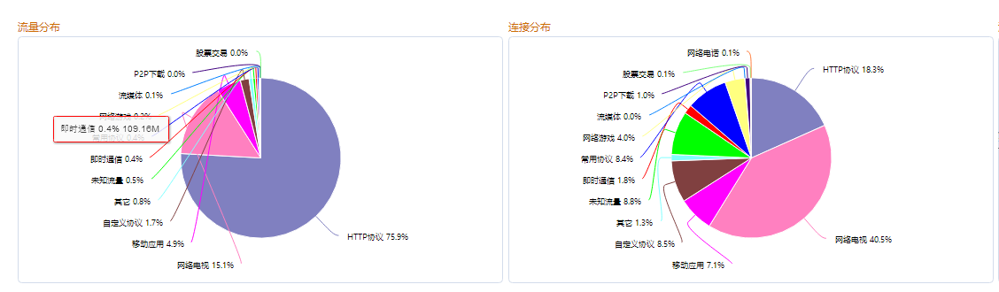
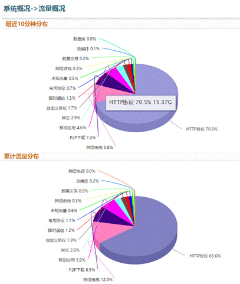

为什么要部署缓存系统？
在数字信号处理的理论中，人们把能加工、变换数字信号的实体称作系统。由于处理数字信号的系统是在指定的时刻或时序对信号进行加工运算，所以这种系统被看作是离散时间的，也可以用基于时间的语言、表格、公式、波形等四种方法来描述。 从抽象的意义来说，系统和信号都可以看作是序列。但是，系统是加工信号的机构，这点与信号是不同的。人们研究系统还要设计系统，利用系统加工信号、服务人类，系统还需要其它方法进一步描述。描述系统的方法还有符号、单位脉冲响应、差分方程和图形。 中国学者钱学森认为:系统是由相互作用相互依赖的若干组成部分结合而成的，具有特定功能的有机整体，而且这个有机整体又是它从属的更大系统的组成部分。
视频和下载究竟能占用多少带宽？
这在数字信号处理的理论中，人们把能加工、变换数字信号的实体称作系统。由于处理数字信号的系统是在指定的时刻或时序对信号进行加工运算，所以这种系统被看作是离散时间的，也可以用基于时间的语言、表格、公式、波形等四种方法来描述。 从抽象的意义来说，系统和信号都可以看作是序列。但是，系统是加工信号的机构，这点与信号是不同的。人们研究系统还要设计系统，利用系统加工信号、服务人类，系统还需要其它方法进一步描述。描述系统的方法还有符号、单位脉冲响应、差分方程和图形。 中国学者钱学森认为:系统是由相互作用相互依赖的若干组成部分结合而成的，具有特定功能的有机整体，而且这个有机整体又是它从属的更大系统的组成部分。

上图中我们可以很清楚的看到在线视频类占用了82.21%

在数字信号处理的理论中，人们把能加工、变换数字信号的实体称作系统。由于处理数字信号的系统是在指定的时刻或时序对信号进行加工运算，所以这种系统被看作是离散时间的，也可以用基于时间的语言、表格、公式、波形等四种方法来描述。 从抽象的意义来说，系统和信号都可以看作是序列。但是，系统是加工信号的机构，这点与信号是不同的。人们研究系统还要设计系统，利用系统加工信号、服务人类，系统还需要其它方法进一步描述。描述系统的方法还有符号、单位脉冲响应、差分方程和图形。 中国学者钱学森认为:系统是由相互作用相互依赖的若干组成部分结合而成的，具有特定功能的有机整体，而且这个有机整体又是它从属的更大系统的组成部分。